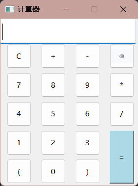

Qt项目1--四则运算计算器¶
1. QT交互窗口¶
利用多个PushButton实现，建立了一个网格布局，每个Button都需要一个槽函数用于用户输入并显示：
void Widget::on_oneButton_clicked()
{
//点击1，追加1，QString类重载了+=
expression += "1";
ui->mainLineEdit->setText(expression);
}

包含设置了一些样式表：
//设置窗口大小固定
this->setMaximumSize(225,272);
this->setMinimumSize(225,272);
//设置LineEdit的字体和大小
QFont f("微软雅黑",14);
ui->mainLineEdit->setFont(f);
//设置按钮图标
QIcon DeleteButton("D:\\Desktop\\QT\\QTonline\\calcula\\del.png");
ui->deleteButton->setIcon(DeleteButton);
// 设置按钮的样式表
ui->equalButton->setStyleSheet("background-color: lightblue;");
要设置字体样式、图标样式和样式表，通常使用以下类和方法：
-
字体样式（
QFont类）：- 使用
QFont 类创建字体对象，并设置字体的各种属性，如字体类型、字体大小、加粗、斜体等。 - 使用
setFont 方法将字体对象应用到相应的 UI 控件上，例如标签、按钮、文本框等。
QIcon类）：- 使用
QIcon 类创建图标对象，可以加载图像文件或使用内置图标。 - 使用
setIcon 方法将图标对象应用到按钮、工具栏按钮等控件上。
setStyleSheet方法）：- 使用样式表可以自定义控件的外观和布局，使用 CSS 风格的语法来描述样式。
- 使用
setStyleSheet 方法将样式表应用到单个控件或整个窗口上，可以改变控件的颜色、边框、背景等。
- 使用
这些方法和类使得你能够轻松地自定义 Qt 应用程序的外观和样式，以满足你的需求和设计要求。
2. 算法¶
界面构造容易，主要是算法实现计算器的效果，利用堆栈和字符数组来实现中缀表达式的计算：
- 堆栈（Stack） ：这个算法使用两个堆栈，一个用于存储操作数（s_num），另一个用于存储操作符（s_opt）。堆栈是一种后进先出（LIFO）的数据结构，适用于处理表达式中的操作数和操作符。通过堆栈，可以方便地对操作数和操作符进行推入和弹出操作，以实现中缀表达式的计算。
- 字符数组（char array） ：这个算法将输入的中缀表达式转换为字符数组，以便逐字符处理。它使用
QByteArray来存储字符数组，并使用QString的方法将输入的表达式转换为const char* 类型，以便在代码中访问每个字符。
代码：
void Widget::on_equalButton_clicked()
{
QStack<int> s_num, s_opt; // 创建两个堆栈，一个用于操作数，一个用于操作符
int i = 0, tmp = 0, num1, num2; // 初始化变量
// 将表达式从QString转换为const char*
QByteArray ba;
ba.append(expression.toUtf8().constData()); // 将QString转换为const char*
const char* opt = ba.data();
// 开始处理表达式字符
while (opt[i] != '\0' || !s_opt.empty())
{
if (opt[i] >= '0' && opt[i] <= '9') // 如果字符是数字
{
tmp = tmp * 10 + opt[i] - '0'; // 构建多位数
i++;
if (opt[i] < '0' || opt[i] > '9') // 如果不是数字，将操作数推入操作数栈
{
s_num.push(tmp);
tmp = 0;
}
}
else
{
if (s_opt.empty() || Priority(opt[i]) > Priority(s_opt.top()) || (s_opt.top() == '(' && opt[i] != ')')) // 如果操作符栈为空，或者当前操作符的优先级高于栈顶操作符，或者栈顶操作符是左括号，当前字符不是右括号
{
s_opt.push(opt[i]); // 将操作符入栈
i++;
continue;
}
if (s_opt.top() == '(' && opt[i] == ')') // 如果栈顶操作符是左括号，当前字符是右括号
{
s_opt.pop(); // 弹出左括号
i++;
continue;
}
// 如果当前操作符的优先级小于等于栈顶操作符，或者当前字符是右括号且栈顶也是右括号，或者当前字符是结束符且操作符栈不为空
if (Priority(opt[i]) <= Priority(s_opt.top()) || (opt[i] == ')' && s_opt.top() == ')') ||
(opt[i] == '\0' && !s_opt.empty()))
{
char ch = s_opt.top();
s_opt.pop();
switch (ch) {
case '+':
num1 = s_num.top();
s_num.pop();
num2 = s_num.top();
s_num.pop();
s_num.push(num1 + num2); // 计算并将结果推入操作数栈
break;
case '-':
num1 = s_num.top();
s_num.pop();
num2 = s_num.top();
s_num.pop();
s_num.push(num1 - num2);
break;
case '*':
num1 = s_num.top();
s_num.pop();
num2 = s_num.top();
s_num.pop();
s_num.push(num1 * num2);
break;
case '/':
num1 = s_num.top();
s_num.pop();
num2 = s_num.top();
s_num.pop();
s_num.push(num1 / num2);
break;
}
}
}
}
if (!s_num.empty()) // 如果操作数栈不为空
{
ui->mainLineEdit->setText(QString::number(s_num.top())); // 在界面上显示结果
}
else
{
ui->mainLineEdit->setText("Error"); // 如果栈为空，显示错误
}
expression.clear(); // 清空表达式
}
int Widget::Priority(char ch)
{
switch (ch)
{
case '(':
return 3;
case '*':
case '/':
return 2;
case '+':
case '-':
return 1;
default:
return 0;
}
}
代码解析：
-
on_equalButton_clicked 函数是在用户点击"="按钮时触发的槽函数。 -
QStack 是一个用于存储数据的栈结构，这里使用了两个栈s_num 和s_opt。s_num 用于存储操作数（数字），s_opt 用于存储操作符（运算符）。 - 代码中使用了一个循环来遍历表达式字符串
opt，这个字符串是通过将expression 转换为 UTF-8 编码的const char* 得到的。 - 当遇到数字时，将数字压入
s_num 栈。 -
当遇到操作符时，会与
s_opt 栈顶的操作符进行比较，按照优先级规则执行以下操作： -
如果当前操作符的优先级高于
s_opt 栈顶操作符，将当前操作符压入s_opt 栈。 - 如果当前操作符的优先级低于或等于
s_opt 栈顶操作符，需要从s_opt 栈中弹出操作符，并从s_num 栈中弹出相应数量的操作数，执行计算，并将结果压回s_num 栈。这一步可能会进行多次，直到s_opt 栈顶操作符的优先级不再高于当前操作符。 - 如果遇到
( 括号，直接将( 入栈。 -
如果遇到
) 括号，需要从s_opt 栈中弹出操作符，执行计算，直到遇到与( 匹配的左括号。 -
最后，如果
s_num 不为空，将栈顶的结果取出并显示在文本框中。如果s_num 为空，表示表达式不合法，文本框显示"Error"。 -
Priority 函数用于返回运算符的优先级，数字越大表示优先级越高。
3. QStack类¶
QStack 是 Qt 框架中的一个类，它是一个栈（Stack）数据结构的实现，用于存储一组元素，并且遵循后进先出（LIFO）的原则，即最后压入栈的元素最先弹出。以下是关于 QStack 类的一些重要信息和用法：
- 包含头文件： 要使用
QStack，需要包含头文件<QStack>。 -
创建 QStack 对象： 可以通过以下方式创建一个
QStack 对象：这里创建了一个整数类型的栈，但你可以根据需要创建不同类型的栈，例如
4. 弹出元素： 使用QStack<QString> 来存储字符串。 3. 压入元素： 使用push 函数将元素压入栈顶：pop 函数从栈顶弹出元素，并返回该元素的值：请注意，如果在弹出元素之前没有检查栈是否为空，可能会导致运行时错误。因此，在弹出之前通常需要使用
6. 检查栈是否为空： 使用isEmpty 函数来检查栈是否为空。 5. 访问栈顶元素： 使用top 函数可以访问栈顶元素的值，但不会将其从栈中弹出：isEmpty 函数可以检查栈是否为空： 7. 获取栈的大小： 使用size 函数可以获取栈中元素的数量： 8. 清空栈： 使用clear 函数可以清空栈，将栈中的所有元素移除：
QStack 类提供了一种方便的方式来管理栈数据结构，通常在需要进行后进先出操作的场景中使用，例如在算法实现、表达式求值等方面。它是 Qt 框架中众多容器类之一，用于简化数据结构的使用和管理。